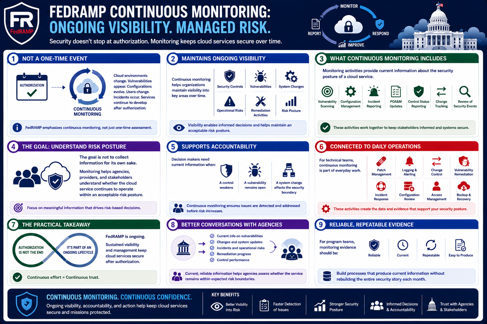

What Is FedRAMP?
Continuous Monitoring
Connecting to LMS... Progress: in progress
Version 1.0 | Date: 2026-06-16 | Educational overview of FedRAMP concepts.

Narration
FedRAMP emphasizes continuous monitoring rather than one-time assessment. Cloud environments change, vulnerabilities appear, configurations evolve, users change, incidents occur, and services continue to develop after authorization.
Continuous monitoring helps organizations maintain visibility into security controls, vulnerabilities, system changes, operational risks, and remediation activities over time.
Monitoring may include vulnerability scanning, configuration management, incident reporting, plan of action updates, control status reporting, change tracking, and review of security-relevant events.
The goal is not to collect information for its own sake. Monitoring should help agencies, providers, and stakeholders understand whether the cloud service continues to operate within an acceptable risk posture.
Continuous monitoring also supports accountability. If a control weakens, a vulnerability remains open, or a system change affects the security boundary, decision makers need current information.
For technical teams, continuous monitoring connects FedRAMP to daily operations. Patch management, logging, alerting, change control, vulnerability remediation, incident response, and configuration review all contribute to the security picture.
The practical takeaway is that FedRAMP is ongoing. Authorization is not the end of the work; it is part of a lifecycle that depends on sustained visibility and management.
Continuous monitoring also supports better conversations with agencies. Current information about vulnerabilities, changes, incidents, and remediation gives stakeholders a clearer view of whether the service remains within expected risk boundaries.
For program teams, this means monitoring evidence should be reliable and repeatable. The organization needs processes that can produce current information without rebuilding the entire security story from scratch each month.